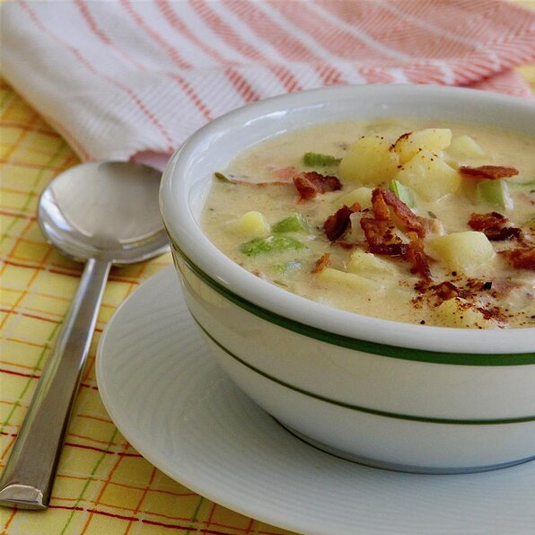

Potato Soup

Description
The receipe for the perfect potato soup is here! Easy to prepare with
simple ingredents. Garnish with a pat of butter if that’s your
thing. Best served with warm, crispy bread.
Ingredients
- 6 russet potatoes, peeled and cut into 1/2 inch cubes
- 5 slices bacon, cut into 1/2 inch pieces
- 3 tablespoons butter
- 2 stalks celery, cut into 1/4 inch slices
- 1/2 large onion, diced
- 20 baby carrotes, cut into 1/4 inch pieces
- 2 teaspoons kosher salt, divided
- 1 1/2 teaspoons freshly ground black pepper, divided
- 3 tablespoons all-purpose flour
- 2 cups half and half
- 1 1/2 cups chicken broth
- 1/4 teaspoon dried thyme
- 1/8 teaspoon cayenne pepper
- 1 dash ground nutmeg
- 4 green onions, finely sliced
- 1 dash paprika, to taste
Steps
- Place potatoes in a large port and cover with water, bring to
a boil. Cook until fork-tender, about 10 minutes. Drain.
- Place bacon in a large saucepan and cook over medium-high heat,
turning occassionally, until crispy, about 8 minutes. Drain
bacon slices on paper towels. Pour our bacon grease.
- Melt butter in the saucepan over medium heat, scraping the bottom
of the pan with a flat-edged wooden spoon. Add celery, onions,
carrots, 1 teaspoon salt, and 1/2 teaspoon pepper. Cook and
stir until tend, about 10 minutes. Sprinke in flour, cook and
stir for 2 minutes.
- Pour half and half and chicken broth into the saucepan. Add
potatoes, 1 teaspoon salt, 1/2 teaspoon pepper, thyme, cayenne
pepper, and nutmeg. Bring to a boil, stirring frequently. stir
in bacon pieces. Reduce heat and simmer, stirring often, until
flavors combine, about 10 minutes.
- Ladle into serving bowls. Garnish with 1/2 teaspoon pepper,
green onions, and parika.